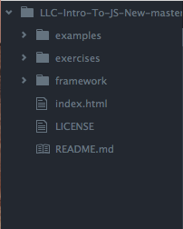
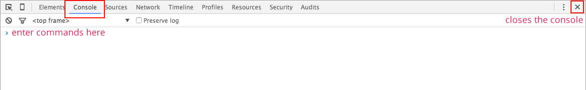
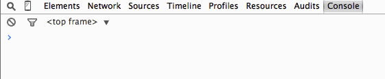
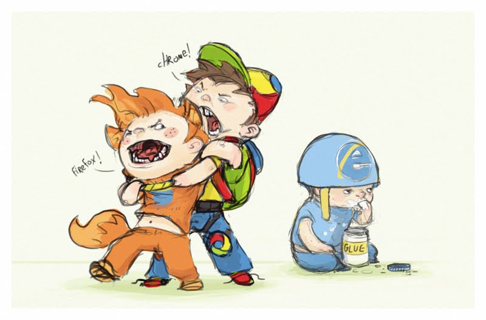
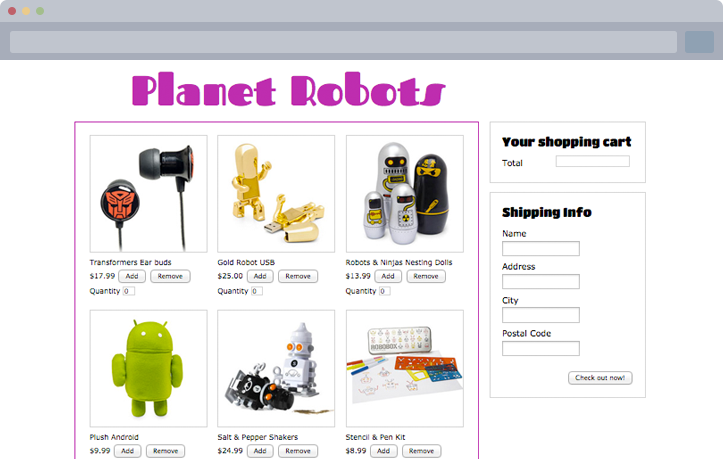
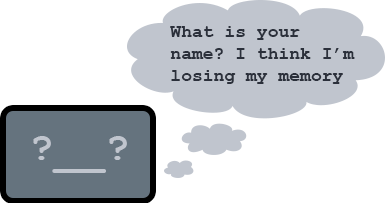
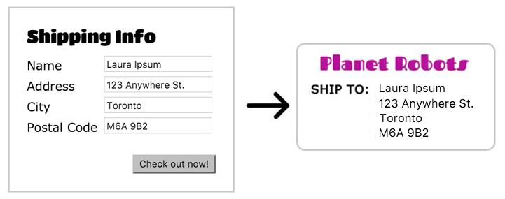

Development Environment: tools you need to get started
Technology Overview: Programming and JavaScript
Technology Overview: Programming and JavaScript
Part 2: Functions
Afternoon
Part 3: Making decisions with conditionals
Part 4: Objects
Part 5: The DOM and manipulating objects on a HTML page
Homestretch
jQuery Hands-on
Where to go from here?
Using the Code Editor
Open the code editor
Find the zip folder that we downloaded
Unzip the zip folder
Drag the folder to the code editor
Your sidebar should now have to following items

THE CONSOLE
The console is an interactive tool, built into the browser. We can use this tool to enter commands and interact directly with a web page, log diagnostic information and check for errors. We'll be using it today to practice writing some JavaScript code. The console in Chrome looks like this:

Note the > symbol. It is used by the console to represent a space for you to enter your input but you don't have to actually type it.
ACCESSING THE CONSOLE
In Chrome, there are a couple ways to open the Console tab.
Use the keyboard shortcut: COMMAND + OPTION + J (MAC) CONTROL + SHIFT + J (WINDOWS/LINUX).
OR
Select: View > Developer > JavaScript Console.
You can open the console when viewing any HTML page but let’s use this blank HTML page, console.html so we can have a blank slate to practice with throughout the day.
Open console.html now and take a moment to practice opening and closing the console until you’re comfortable with it.
Re-iterate to the class to keep console.html open in a tab to refer back to for the console exercises. A blank document was created rather than opening the console in the slide deck so any errors showing won't confuse the learners and take away from the lesson explaining things not needed for the task at hand.
Mini-exercise
Let's experiment with typing some input into the console. Return to console.html and open the console. After the > symbol, type your favorite number and press the enter/return key.
You will see something like this:

The > symbol is used by the console to represent a space for your input. The < symbol is used by the console to represent the returned value of your input.
You can also input text BUT when using text, make sure you put it in quotes (more on this soon).
The command you input into the console gets evaluated and a value is returned back to you.
Sample Code Incoming!!
JavaScript in Different Browsers
Usually JavaScript will run the same way in various browsers.
But, browsers are software programs written by many different people/companies (people programming things just like you!), so sometimes they say "hi" with different accents.
Imagine a British accent versus a Texas accent.
This is especially noticeable with newer "HTML5" features.

A JavaScript Experiment
JavaScript is essential for "AJAX", "Web 2.0", and "HTML5" websites. All these terms refer to various methods of making interactive web pages using Javascript.
Try this experiment: Turn off JavaScript in your web browser. Go to the JavaScript settings for Chrome ( chrome://settings/content ) and select "Do not allow any site to run JavaScript"
As the owner of the thriving store, Planet Robots, you have to make sure you have a top notch website.

JavaScript Exercise Overview
You'll want to do things like offer online shopping, print shipping labels and tempt loyal customers with members only sales!
You'll also want to make sure that everything works properly as well.
That means customers shouldn't be able to submit empty forms and product totals must be calculated properly in their shopping carts.
In order to create a website that can handle these requirements, we will need to learn how to use functions, variables and conditionals.
Functions
Intro to Functions
What is something that you do that's very repetitive or a hassle? Wouldn't it be great if it was automated?
Paying for parking:
The Old Way
The Improved Way
Find bank machine
Pull out bank card
Get money out from ATM
Buy chips so you can make change
Put change into machine
Take receipt
Pull the PayPass credit card from your wallet
Tap
Take receipt
Intro to Functions
We can think of step 2 as a function. We can't see all the steps that happen but we know that performing the action of tapping the card will execute some instructions that will allow us to pay automatically.
The improved way
Pull the PayPass credit card from your wallet
Tap
Take receipt
Intro to Functions
Functions are used to make the code "do things."
To get the function to execute, you have to call the function by using the function name followed by round brackets.
If the credit card tap was a function in JavaScript, it could look something like this:
tapCard()
Intro to Functions
We can create our own functions but there are already some handy ones built into JavaScript. There are three functions that are useful for testing and writing code.
If the credit card tap was a function in JavaScript, it could look something like this:
tapCard()
Functions in JavaScript
Functions are pieces of code that are reusable. You declare a function like a variable, but instead of holding a single value, a function holds a series of instructions. When you 'call' or 'invoke' a function, the instructions are executed. Sometimes they are also called methods when found on an object - more on that in a bit!
`prompt()` and `alert()` show popups in the browser.
`document.write()` and outputs text onto the page, aka the document.
document.write(); is a quick and easy way to output text onto the page but is not best practice for use in "the real world." console.log(); is better. Here's some more info.
Comments
Sometimes you want to write notes to yourself (and others!) to organize blocks of code or leave explanations, but you want the browser to ignore it. Use comments!
```javascript
// This is how you leave a single line comment.
// You can write many single line comments.
// Just make sure to add the double backslash
// for every new line.
```
Here's another way to comment larger blocks of text.
```javascript
/* This is how you leave
multi-line comments for when you
want to write a longer message */
```
Multi-line comments are great for "hiding" large blocks of code so you can try something new without erasing your old code. Don't forget to remove the old code later if you decide that you don't need it though!
Variables
Variables
Variables are like containers or a box. They are used to store values so you can use them later on, when you need them.
Variables (cont'd)

Variables are also like the computer's short-term memory. It doesn't remember anything unless you tell it to. In this example, the computer can't remember anyone's name!
prompt("What's your name?");
document.write("Hello....?");
Variables Syntax
Variables How-to
Declare variables with the keyword var.
var email;
Assign a value to the variable using the equals (=) sign. End the statement with a semicolon (;).
var email = "hello@isanybodyoutthere.com";
Now the computer will remember my email address!
Statements are commands that tell the computer what to do.
Ending the statement with a semicolon is like ending a sentence
with a period. It tells the computer that the statement is done.
Variables (cont'd)
In a web checkout form that asks for your name and address, variables can be used to store this information. The stored information can then be used to create things like shipping labels.

Aside: Statements
Statements are commands that tell the computer what to do. End a statement with a semicolon (;) to tell the computer that the statement is done.
Ending a statement with a semicolon is like ending a sentence with a period.
You can also declare a variable with one or two statements.
```javascript
var email;
email = "hi@youremail.com";
```
is the same as
```javascript
var email = "hi@youremail.com";
```
Say My Name, Say My Name
Let's try creating some variables.
Below is an example of a variable for your name. Try creating another variable for your email address. Output the values using document.write().
Assigning Variables
Important
Using the equals (=) symbol in Javascript is NOT the same as in math.
var total = 1 + 1 is not the same as 1 + 1 = 2
var total = 1 + 1 means:
evaluate everything to the right of the equals sign (e.g. 1 + 1), then assign this value (e.g. the number 2) to the variable on the left side.
You will see later that we can re-assign new values to an existing variable.
Various Variables
Variables can hold different kinds of values.
1. Numeric variable (integers & decimals)
var someIntegerNumber = 10;
var someDecimalNumber = 10.5;
2. String variable (letters, words & sentences)
var singleWordString = "hello";
var sentenceString = "Hello, good day to you!";
var numberString = "10";
3. Boolean variable (true/false)
var isSaturday = false;
var isSunday = true;
Whitespace in JavaScript
Whitespace refers to blank characters and includes space characters, tabs and line breaks.
JavaScript ignores whitespace except when used in a string.
```javascript
var name="Ladies Learning Code";
//same as
var name = "Ladies Learning Code";
//but not the same as
var name = "Ladies Learning Code";
```
```javascript
alert("Whitespace in a string.");
document.write("Whitespace in a string.");
```
Mini-exercise #1 (5-10 minutes)
Here's a test shipping form. Right now, after you press Run, the shipping label is blank. How do we fix this?
(1) Use variables to store your name and address!
(2) To verify that your variables are working, uncomment out the document.write() lines and replace ********** with the actual name of your variables.
File: exercises/1-mini-exercise-problem.html
```javascript
//The web browser will ask you for your shipping details.
//Declare a "name" and an "address" variable to remember the values.
prompt("What's your name?");
prompt("Your mailing address?");
//Confirm that your package will be shipped to the right place!
document.write("Confirm Shipping Label: ");
/*
document.write(**********); //output the name
document.write(" "); //just a line break
document.write(**********); //output the address
*/
```
JavaScript Arithmetic Operators
We can use JavaScript to do math using arithmetic operators.
The arithmetic operators in JavaScript are (+) for addition, (-) for subtraction, (*) for multiplication and (/) for division.
```javascript
document.write(20 + 20);
```
Arithmetic Operators and Variables
Getting JavaScript to do math can be very useful. For example, we can use it to calculate totals in a shopping cart form.
Instead of using just numbers, JavaScript can do math using variables with numerical values.
```javascript
var tshirtPrice = 25;
var androidPrice = 10;
document.write(tshirtPrice + androidPrice);
```
Arithmetic Operators, Numbers & Strings
Remember there were different variable types? Arithmetic operators can only be performed on numerical values.
But numbers can be declared as strings too, so be careful!
If you put double quotes (" ") or single quotes (' ') around the value, the computer will thinks it's a string.
```javascript
var firstNumber = "20";
var secondNumber = 10;
document.write(firstNumber + secondNumber);
```
Shopping Cart: Totals and Discounts
Let's try applying some arithmetic operations to our shopping cart.
```javascript
var tshirtPrice = 25;
var androidPrice = 10;
var discountPercentage = 15;
// What is the cost of one t-shirt and one android?
var total;
//total = **********
document.write(total);
document.write(" ");
// Guess what? Ladies Learning Code gets 15% off!
// Figure out how much the discount will be.
var discountAmount;
//discountAmount = **********
//document.write(discountAmount);
document.write(" ");
// Apply the discount to get the final price.
var finalTotal
//finalTotal = **********
//document.write(finalTotal);
```
Re-assigning Variables
Even after a variable has been declared with a value, we can still re-assign the value. For example, we may want to increase or decrease values by
1. This will come in handy when we discuss Loops later on.
File: examples/008-reassigning-variables.html
```javascript
//declaring variable
var numberOfCookies = 0;
//re-assigning the value by adding 1
numberOfCookies = numberOfCookies + 1;
alert("I will only have " + numberOfCookies + ".");
//declaring another variable
var remainingCookies = 4;
//re-assigning the value by subtracting 1
remainingCookies = remainingCookies - 1;
alert("I just ate a cookie. Now I have " + remainingCookies + " left.");
```
Who loves LadiesLearningCode?
Don't worry about the function or unfamiliar parts right now. You will be familiar with them soon enough.
Run it and see what happens!
```javascript
var loves = 0;
function moreLove(){
//re-assigning the value of the love variable
loves = loves + 1;
document.getElementById('update').innerHTML = loves;
}
```
How do we increase or decrease the value of the variable?
File: exercises/2-mini-exercise-problem.html
```javscript
/* 1. set var 'quantity' to start at 0. This will be
used to hold the value for the quantity of robots */
var quantity =
function addItem(){
// CODE HERE EXECUTES WHEN YOU PRESS THE 'ADD' BUTTON
//2. set the variable 'quantity' to increase by 1 HERE
refreshTotal();
}
function removeItem(){
// CODE HERE EXECUTES WHEN YOU PRESS THE 'REMOVE' BUTTON
//3. set the variable 'quantity' to decrease HERE
refreshTotal();
}
function refreshTotal() {
var totalCost = quantity * 20; //quantity * fixed price
document.getElementById('updateQuantity').value = quantity; //updates
} ```
Now that we've calculated some numerical totals, how do we format the output to add a non-numerical value like a dollar sign? We use concatenation.
concatenation is the joining of strings, using the (+) symbol. Remember this example?
```javascript
//Slide: Arithmetic Operators, Numbers and Strings
var firstNumber = "20";
var secondNumber = 10;
document.write(firstNumber + secondNumber);
```
Concatenation and Strings
If you use the (+) operator with numerical values, it will add the values. Otherwise, it will combine the outputs as a string.
Only the addition (+) operator can be used to combine strings.
File: examples/011-concatenation-and-strings.html
```javascript
//Addition with the + operator
var tshirtPrice = 25;
var androidPrice = 10;
var shoppingTotal = tshirtPrice + androidPrice;
document.write(shoppingTotal);
document.write(" ");
//Concatenation with the + operator
//document.write("Your total is: " + "$" + shoppingTotal);
//document.write(" ");
//no nos
//document.write("Your total is:" * shoppingTotal);
//document.write(" ");
//document.write("$" + 20 + 1);
```
Concatenation in action (results)
Let's re-visit mini-exercise #2 and add a total cost field
File: examples/012-concatenation-in-action.html
```javasript
var quantity = 0;
function addItem(){
quantity = quantity + 1;
refreshTotal();
}
function removeItem(){
quantity = quantity - 1;
refreshTotal();
}
function refreshTotal() {
//this will update the HTML textfield
document.getElementById('updateQuantity').value = quantity;
//EXAMPLE: Use concatenation to add a human readable $ sign to the price
var totalCost = quantity * 20; //quantity * fixed price OF $20
//var totalCostToShow =
//this will update the HTML textfield
document.getElementById('updateTotal').value = totalCost;
}
```
Let's pretend to be your wise but nagging grandmother right now:
I hear it's cold out: bring a sweater!
The weather network says it's going to rain: take your umbrella!
It's cold and snowing: wearing your warm boots!
If (condition) then (perform instruction)
All these things make logical sense to us as grown up humans but computers are a blank slate. The last one is a little closer to the simple instructions that a computer needs.
As a programmer, you tell the computer how to behave across certain states or events by using CONDITIONALS.
A basic conditional that your browser does internally is to react to mouse clicks on a HTML element. The browser does its own conditional check behind the scenes.
IF a user has clicked on a button THEN call the animate() function.
...And Interactivity
Notice how the brush acts when you speed up / slow down, or get close to other lines. You can even change brushes.
The ! operator returns true only if the condition returns false
!true // returns false
!false // returns true
Mixing it all together
let's set the variables two = 2 and ten = 10
(two <= 5 && ten != 9 || 10 == ten)
returns true
(20 != (ten*two) && 3 >= two)
returns false
More Conditional Examples
Let's look at some examples. What do you think the output will be? Uncomment the code to be executed for each condition to see if the result is what you expected. Try changing the variable values too!
File: examples/014-more-conditional-examples.html
```javascript
var regularPrice = 200;
var salePrice = 19.99;
if ( salePrice < regularPrice ) {
//document.write("#1 You've got to buy that robot! ");
}
if ( salePrice > regularPrice ) {
//document.write("#2 Don't buy that robot ");
} else {
//document.write("#2 Buy two in different colours! ");
}
if ( salePrice > regularPrice ) {
//document.write("#3 Don't buy that robot");
} else if ( salePrice == regularPrice) {
//document.write("#3 Only buy it if you reeeaallly want it! ");
} else {
//document.write("# Buy two in different colours! ");
}
```
Variables, Operators, Concatenation and Conditionals
Now that we know what variables, operators and conditionals are, let's put them all into action using dynamic content.
```javascript
var price = prompt("How much is that robot?");
if ( price <= 100 ) {
document.write("$" + price + " isn't bad. Buy it!");
} else {
document.write("$" + price + "? Jeez! That's a lot of money!");
}
```
Mini-exercise #3 (10 minutes)
Uh-oh! Someone can attempt to put a negative number of products in their shopping cart! Complete task #1 in the next slide to fix this. For task #2, warn the user that they are attempting to check out with an empty basket. Make a more robust shopping cart so that your customer's order doesn't go sideways.
This is based on Exercise #3 so it should look very familiar!
(Hint: How do you test if a number is greater than, less then, or equal to another number?)
Mini-exercise #3 (10 minutes)
TODO: Check within the code for your THREE tasks.
File: exercises/3-mini-exercise-problem.html
```javascript
var quantity = 0;
function addItem(){
quantity++;
refreshTotal();
}
function removeItem(){
/* *** YOUR CODE _BELOW_ HERE **** */
/* 1. Use a conditional if/else statement on the "quantity" variable
to avoid having negative products. */
quantity--;
/* *** YOUR CODE ^ABOVE^ HERE **** */
refreshTotal();
}
function checkout() {
/* *** YOUR CODE _BELOW_ HERE **** */
/* 2. Use a conditional if statement on the "quantity" variable
to determine if the shopping cart is (or is not) empty. */
// below are some alert messages you can use
alert( "Sorry, you don't have anything in your cart!" );
alert( "Thank you for your order!" );
/* *** YOUR CODE ^ABOVE^ HERE **** */
}
function refreshTotal() {
var totalCost = quantity * 20; //quantity * fixed price
document.getElementById('updateQuantity').value = quantity; //updates
// 3. A nice to have: Put a dollar sign in front of the totalCost
document.getElementById('updateTotal').value = (totalCost);
}
```
Mini-exercise #4 (5-10 minutes)
Let's revisit the shipping form again -- it's a very simple shipping form, but you don't want someone to be able to submit their order if they haven't filled out their address!
You have been supplied with 1 variable ("address") which will automagically match what is typed into the form field (minus extra whitespace) after you press the "Check out now!" button.
(Hint: If you don't type anything into the address field, you get an "empty string". How do you test for an empty string?)
Mini-exercise #4 (5-10 minutes)
TODO: Check within the code for your ONE task.
File: exercises/4-mini-exercise-problem.html
```javascript
function validateForm() {
// automagically get the typed values from the form
var address = document.getElementById("address").value;
/* *** YOUR CODE _BELOW_ HERE **** */
/* TODO: Use a conditional if/else statement on the "address" variable
to determine if the address field is (or is not) blank,
then show the proper error or confirmation alert message. */
// below are some alert messages you can use
alert( "Sorry there are errors. Form fields cannot be blank!" );
alert( "Thank you for your order!" );
/* *** YOUR CODE ^ABOVE^ HERE **** */
}
```
Mini-exercise #5 (15-20 minutes)
Now here's a more complex shopping form that you require all fields to be filled in. You have been supplied with 3 additional variables which will automagically update: "name", "city", and "postal".
(Hint for task #3: How do you test for something AND somethingElse OR anotherThing at one time?)
Bonus: There's always different ways to get to the same end goal. If you're finished early, try out different ways that you can reduce the number of variables and lines of code.
Mini-exercise #5 (15-20 minutes)
Statements are comma
File: exercises/5-mini-exercise-problem.html
```javascript
function validateForm() {
// automagically get the typed values from the form
var name = document.getElementById("name").value;
var address = document.getElementById("address").value;
var city = document.getElementById("city").value;
var postal = document.getElementById("postal").value;
/* *** YOUR CODE _BELOW_ HERE **** */
/* 1. Declare 4 variables named
"nameIsBlank", "addressIsBlank", "cityIsBlank", and "postalIsBlank"
that will each hold Boolean values. */
/* 2a. Use conditional if/else statements on the variables
"name", "address", "city", and "postal" to determine
if each individual field is not blank.
2b. Update their respective Boolean variables based on their
individual if/else statements. */
/* 3. In a final conditional, test ALL FOUR fields
and alert the proper message */
// below are some alert messages you can use
alert( "Sorry there are errors. Form fields cannot be blank!" );
alert( "Thank you for your order!" );
/* *** YOUR CODE ^ABOVE^ HERE **** */
}
```
Regroup Before Lunch
Learn from our mistakes!
Name something that you did while writing code that caused an error. What were you attempting to do and what were your assumptions when doing it? How did you fix it?
What are some questions or issues you are having with the material covered so far? Lunch with your mentors and pick their brains. :)
What kind of neat stuff can you do with HTML5 and JavaScript?
JavaScript can appear inline in a webpage in several spots. Either in the <head> section or anywhere in the <body> section.
<html>
<head>
<title>JavaScript example!</title>
<script type="text/javascript">
alert("I'm in the head tag!");
</script>
</head>
<body>
<div id="example">This is an example.</div>
<script type="text/javascript">
alert("I'm in the body tag!");
</script>
</body>
</html>
Need to manipulate an html tag or have a quick loading page? Put the JavaScript just before the closing<body> tag.
Objects
If variables are boxes, OBJECTS can be thought of as bento boxes -- "advanced variables" if you will.
How Bento Boxes are like Objects
A basic variable only holds one value.
var takeout = "Fried Rice";
An object holds a collection of values.
```javascript
// create a new object
var bentobox = {};
// fill it with stuff
bentobox.main = "Teriyaki";
bentobox.side = "Tempura";
bentobox.salad = "Seaweed Salad";
bentobox.sushi = "Salmon Avocado Roll";
```
Creating an Object
Creating an Object
Creating an object is easy. Just like any other variable, use the var keyword and give it a descriptive name.
But instead of assigning a single value right away, use these curly braces to make an empty object.
var bentobox = {};
Yes, it's weird but think about the {} as a sort of funky container.
Object Properties
The "compartments" of objects are called PROPERTIES.
If you already have an existing object, there are a few ways to access and set a value to a property. Since these two are very commonly used, they will both be discussed.
Advanced sidenote:
Alternatively, you can both declare an object and set it's values at the same time:
var bentobox = { soup:"Miso", main:"Teriyaki" };
Why use Objects?
Advanced topic: Objects are useful because you group all these properties together and you can reuse the object over again.
There's an expectation of what you'll get in a bento box.
Some items are fixed (seaweed salad and sushi) but some compartments can be edited (a miso soup side versus tempura).
Think of Everything as an Object*
When I said that objects were "advanced variables", here's another way of looking at it:
All JavaScript variables can be treated like objects too.
If curly braces are a container for a generic object, quotes are containers for characters. When we get to arrays next, you'll see that it uses square brackets. (The only "uncontainered" object we've introduced today was a number.)
```javascript
var stringObject = “ ”;
var arrayObject = [ ];
```
Some objects are simpler than others but almost everything in JavaScript has properties available to us.
Built-in JavaScript Properties
In this workshop we won't be creating any of our own objects, but JavaScript already has many objects built into the language.
Let's look at a string object and the length property which returns the number of characters in a string. Try putting your own name in here.
When a function is associated with an object we call it a METHOD.
Let's say you're having a robot sale! Everything is 50% off. But, after doing the math, you notice that the sale price is a bit off.. Let's declare a sale price and manipulate it using toFixed(). When you use a method, it gives you access to all the hard work that someone else did and it only takes you one line to use it!
File: examples/024-object-methods.html
```javascript
var salePrice1 = 20.00 * 0.50;
var salePrice2 = 35.00 * 0.50;
var salePrice3 = 25.99 * 0.50;
//uh-oh, can we make sure we always see 2 decimal spaces?
document.write( salePrice1 );
document.write( " " );
document.write( salePrice2 );
document.write( " " );
document.write( salePrice3 );
```
Looking up properties and references
length and toFixed() are only two of many (many!) more built-in properties and methods of objects in JavaScript.
The numbers inside the square brackets [ ] are referred to as the index number. Array indexes always start at zero.
Arrays can be declared in different ways.
The above example can also be declared like this: var eggspressions = ["skeptical","frazzled","silly", "giggling"];
Arrays and Indexes
Index numbers are used to assign values.
Index numbers are also used to access values.
To access the value of the second egg in the eggspressions array, use index 1 since it's the second item in the list.
File: examples/025-arrays-and-indexes.html
```javascript
var eggspressions = [];
eggspressions[0] = "skeptical";
eggspressions[1] = "frazzled";
eggspressions[2] = "silly";
eggspressions[3] = "giggling";
document.write("The 2nd egg is " + eggspressions[1] + " even though it has an index of 1.");
```
Arrays and Properties
Since Arrays are also objects, there are many properties associated with the Array object.
The length property is also associated with array objects.
As mentioned previously, the length property returns the number of characters when associated with a string. When used with an Array, the length property returns the number of elements.
It is common to use JavaScript to run through a list of values and apply some code to it. In order to do this, we need to know how many elements there are in total.
Let's look at this photo gallery from abcnews.go.com and figure out how length can be used here.
eggspressions.length-1 is the same as 4 - 1 and will return 3
eggspressions[3] returns the last value
eggspressions[eggspressions.length-1] is the same as eggspressions[3]
How is this useful?
Since the index always begins at 0, the last index value is always length-1. This is useful if you want to always access the last index, despite new additions, and apply some code to it.
File: examples/027-how-is-this-useful.html
```javascript
var eggspressions = [];
eggspressions[0] = "skeptical";
eggspressions[1] = "frazzled";
eggspressions[2] = "silly";
eggspressions[3] = "giggling";
document.write(eggspressions[3] + " is the last element in the array. ");
document.write(eggspressions[eggspressions.length-1] + " is the last element in the array.");
```
Loops
Loops
Why use loops? Because sometimes we need to execute repetitive code for a specified number of times or through a list of values.
Loops will execute the same code continuously, using conditional statements to determine when to begin and stop.
It's like creating a playlist on your favorite music player.
You create a list of songs, press play and then each song is played automatically in the set order of the playlist. When it reaches the end of the playlist, it stops
We will be discussing while loops and for loops.
While Loop Syntax
While Loop
The WHILE LOOP executes the code contained in curly braces { }while the condition is true.
An index variable is required to keep track of its place in the loop.
The WHILE LOOP stops executing the code once the condition becomes false.
If you had 10 songs in your playlist, the player won't stop until it reaches the end of song 10.
```javascript
//declare index variable
var i = 0;
while ( i < playlist.length ) {
playCurrentSong();
i = i + 1; // adds 1 to the current index so it moves to the next song
}
```
If the condition is always true, the loop will run infinitely and will never exit the while loop. This can cause your browser to crash!
While Loop in Action!
Let's use the WHILE LOOP to output the mathematical formula for converting Celsius to Fahrenheit.
(The formula is: Temperature = Temperature * 9 / 5 + 32)
This next example uses a WHILE LOOP to output the results of the temperature formula into HTML table rows that are also added dynamically.
It will stop when we reach 30 degrees Celsius (or whatever number is declared in the condition).
See next slide for the example.
While Loop Temperature Conversion
Let's look at the temperature conversion table with and without JavaScript and compare the difference in the amount of repetitive code required to create a table like this manually.
View source and compare the difference between the amount of code.
For Loop Syntax
For Loops
A FOR LOOP also loops through the code a specified number of times until the condition is false.
The index, conditional test and incrementer are all declared in one line. Basically, it's the WHILE LOOP condensed.
```javascript
/* While Loop */
var i = 0; //index
while ( i < playlist.length ) { //condition
playCurrentSong();
i = i + 1; // incrementer
}
```
```javascript
/* For Loop */
// index, condition, incrementer
for ( var i = 0; i < playlist.length; i++ ) {
playCurrentSong();
}
```
Incrementer (i++) and decrementer (i--) operators add or subtract one.
i++ is the same as i = i + 1
i-- is the same as i = i - 1
For Loops and Arrays
FOR LOOPS are useful when used in conjunction with ARRAYS because they can be used to execute specific actions while going through the list of values.
Back to our robot store. It wouldn't be much of a store if there was only one product! We can create a list of different products with various prices by creating an array.
Suppose we wanted to put all the items over $15 on sale? Let's use the FOR LOOP to determine which items are eligible for the sale and output the product number.
```javascript
var productPrices = [];
productPrices[0] = 17.99;
productPrices[1] = 25;
productPrices[2] = 13.99;
productPrices[3] = 9.99;
productPrices[4] = 24.99;
productPrices[5] = 8.99;
for (i=0; i < productPrices.length; i++) {
var value = productPrices[i];
if (value > 15){
document.write("Product " + (i+1) + " is on sale. ");
} else {
document.write("Product " + (i+1) + " is not on sale. ");
}
}
```
Mini-exercise #6 (10-15 minutes)
As owner of Planet Robot, you decide to have a special members-only sale: 50% off all items with a secret password! (p.s. the password is "llc"!)
Sounds like a great deal for the customer, but all you have is a static HTML page right now. Are you going to go through every single product, calculate the discounted price, and then update every entry manually? No, you're going to use loops and arrays!
Share your mistakes so we can learn from each other!
Break time!
Come back in 15 minutes
Document Object Model (DOM)
Manipulating objects on a real HTML page
Manipulating objects on a real HTML page
Think about your HTML web page (your "browser DOCUMENT") as being made up of many blocks.
Pre-defined Blocks
Some blocks are defined by the browser, such as the browser window.
Document Objects
All of these blocks are OBJECTS -- just like the ones we covered earlier! And all these objects have pre-written functions/methods you can use.
Does the line of code below make more sense now? document is one of the main objects of a web page and it has a method named write that accepts a string as a parameter. document has lots of other properties and methods too: check out this list.
```javascript
document.write("Hello!");
```
HTML Element Objects
The most repetitive thing you'll ever do with JavaScript is getting references to your HTML tags ("elements") using document.getElementById().
(It's important that your HTML tag has an id attribute in order to do this!)
For example, let's dynamically find out what the text is in a paragraph tag by reading its innerHTML property. (You can find all the things you can do with elements here.)
You can even update an HTML element's CSS styles dynamically using its style property.
Consider how you might program a button toggle effect to show the difference between "selected" or "deselected" states. (Note the differences between how properties are written in CSS to how they appear in JavaScript -- background-color versus backgroundColor.
You can even create completely new elements out of thin air! Use document.createElement() and appendChild();
File: examples/035-dom-elements.html
<div id="emptyDiv" style="border: 1px solid red; padding: 10px;">
</div>
<script>
// create a new paragraph out of thin air
//insert it into the currently empty div
</script>
Going Beyond JavaScript Basics
You're getting to be quite the pro!
Debugging!
Squash those crawly things in your code.
What's a Bug?
As the story goes, the term "software bug" got its name because a real moth flew into a computer system causing strange, unexpected behaviours to happen in a computer program.
Nowadays, bugs are mostly due to human error in one of two areas:
Use the built in developer tools in Chrome to debug your code. (Firefox is similar but not exactly the same.)
Right click > Inspect Element
Easiest way to remember is to right-click on any web page and select "Inspect Element". In the new panel, select the "Console" tab to see JavaScript errors or to play in the console sandbox.
How can we use the console to find out how many events are listed on this page?
<script src="">
As you write bigger pieces of JavaScript, you will want to start putting your code into their own files so they are easier to manage. Or you might want to enlist the help of others to write JavaScript for your website so you can work on different sections separately. A big site could have thousands of lines of code written by many different people!
To link to an external JavaScript file:
<html>
<head>
<title>JavaScript example!
</head>
<body>
<div id="example">This is an example.
<script type="text/javascript" src="scripts.js"></script>
</body>
</html>
Even though you're not writing JavaScript between the script tags, you must use a closing </script> tag. A self-closing tag such as <script src="scripts.js" /> will not work. The correct way is highlighted below:
jQuery is a cross-browser JavaScript library designed to simplify client-side scripting, manipulating HTML pages and handling events. The library contains many built-in functions and methods that make writing JavaScript code easier.
Getting started
Download the library and include the file in your HTML page
When adding your own custom-written jQuery/JavaScript files, make sure to include it after the jQuery file to ensure that the library loads first.
jQuery: Demo
There are many built in methods and functions included in the jQuery library, too many to remember them all. Never fear, jQuery has documented their API here: http://api.jquery.com
It's searchable and provides explanations and examples.
BUT WAIT. Javascript isn't just for the browser anymore?
Javascript has grown beyond the browser! You can use this language for front-end (browser) AND back-end (server) programming now.
Node.js is a Javascript 'platform' (a bunch of tools and code to help you make complex programs) for building javascript without the browser. It is commonly used to build web servers, but it has other uses too... like ROBOTS!!
 Welcome!
Welcome!

 Usually JavaScript will run the same way in various browsers.
Usually JavaScript will run the same way in various browsers.
 (1) Use variables to store your name and address!
(1) Use variables to store your name and address!